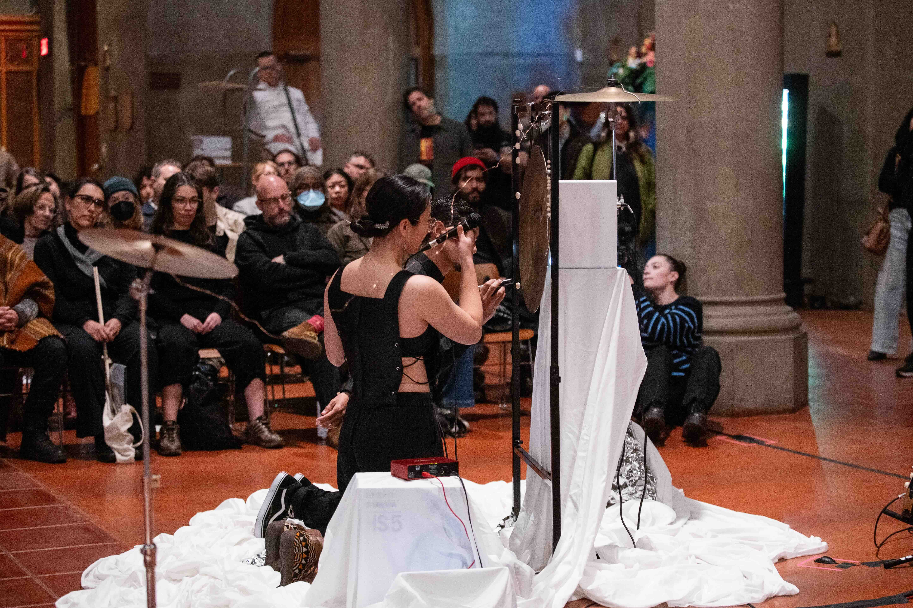
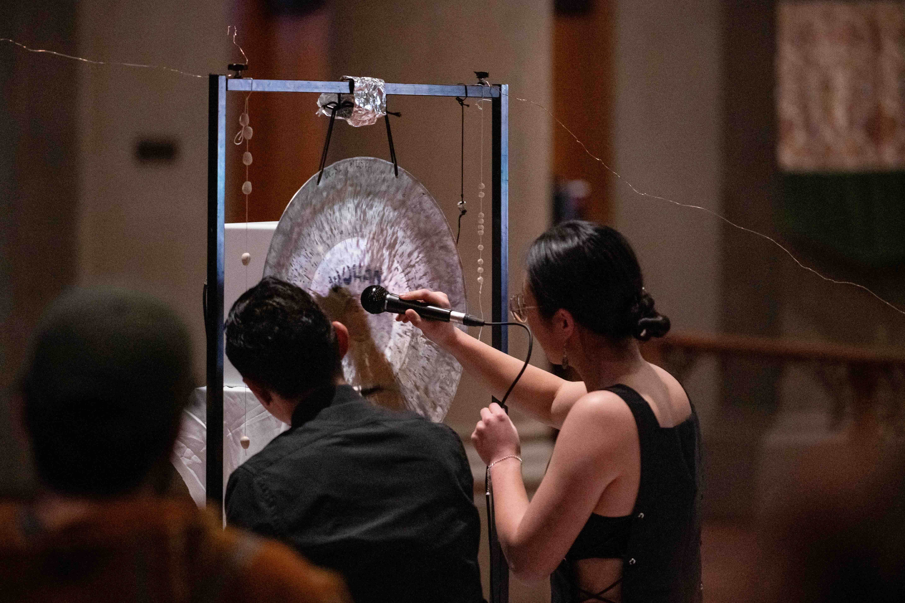
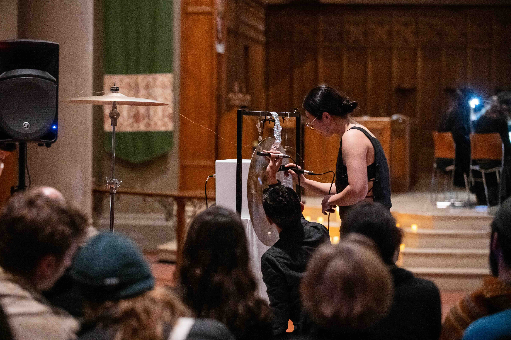
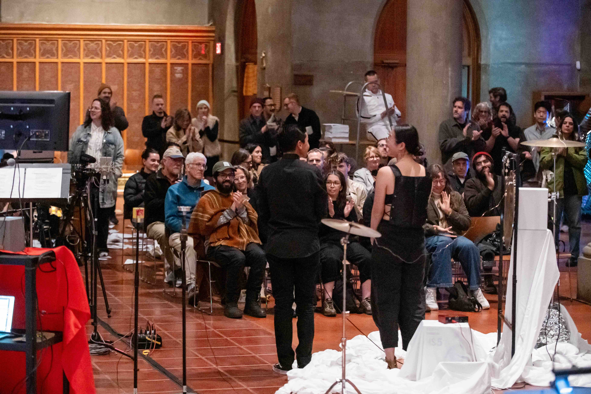

no_input_dev (2025 - )
A direct feedback sound system comprises a speaker, a tam-tam, and several microphones. With no physical excitation of the tam-tam, rich resonance is accomplished with articulated positioning and meditative listening.
Presented in Working Title No. 4, Project [BLANK], San Diego in 2025, collaborating with percussionist Camilo Zamudio.




Presented as part of (<e>) by Theegma Duo in Chaospace, DiMenna Center, NYC, 2025.


To be performed with NEKO3 in Denmark, 2026.
Demo by Theegma Duo:
Press 'Enter' to return to the previous page.